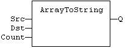
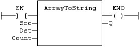

Function
Copy an array of SINT to a STRING.
|
Name |
Type |
Description |
|
SRC |
SINT |
Source array of SINT small integers (USINT for ArrayToStringU). |
|
DST |
STRING |
Destination STRING. |
|
COUNT |
DINT |
Numbers of characters to be copied. |
|
Name |
Type |
Description |
|
Q |
DINT |
Number of characters copied. |
In LD, the operation is executed only if the input rung (EN) is TRUE. The output rung (ENO) keeps the same value as the input rung.
This function copies the COUNT first elements of the SRC array to the characters of the DST string. The function checks the maximum size of the destination string and adjust the COUNT number if necessary.
Q := ArrayToString (SRC, DST, COUNT);

The function is executed only if EN is TRUE.
ENO keeps the same value as EN.
